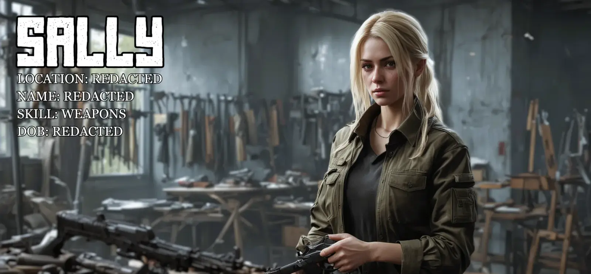
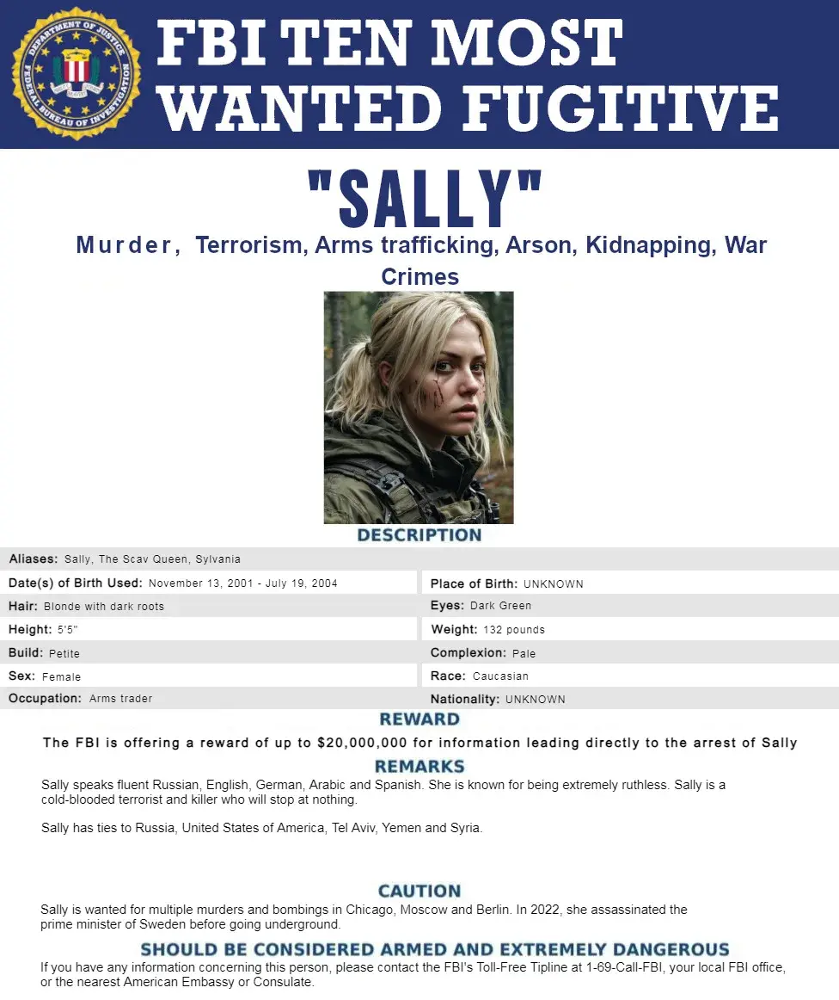

Sally
- Downloads
- 15,708
- Favourites
- 0

“Sally” is an enigma wrapped in whispers, a name that carries more weight in THE CITY’s shadows than the bullets in her high-end magazines. Young, smart, and beautiful, she has captivated the imaginations of those who dare to utter her name. Her dark brown roots peek through her angelic blonde hair, a striking contrast that echoes the duality of her rumored identities. Some say she’s the daughter of a powerful THE CITY boss. Others claim she’s a CIA operative, and few suggests she’s a Russian sleeper agent, biding her time. But the truth about “Sally” remains as elusive as she is.
With a stare that could melt the coldest hearts and eyes that seem to see right through you, Sally is as captivating as the ocean—calm on the surface but hiding depths few dare to explore. Her current whereabouts are as closely guarded as state secrets; she’s somewhere at the Military Reserve in THE CITY, but only the most trusted have been briefed on her exact location.
“Sally” is more than just a pretty face; she’s a trusted supplier of the finest western weapons, high-end ammunition, essential medical supplies, and crucial armor and gear pieces—everything a soldier or mercenary might need in the brutal world of THE CITY. She’s a lifeline for those who navigate the treacherous landscape, and her reputation for reliability is as sharp as the blades she sells.
Sally is a shadow in the wilderness, moving through the forest with an uncanny ease that defies explanation. Raised by her father, a hunter whose true quarry remains a mystery to all but him, she’s inherited his deep connection to the natural world. By day, she walks the dense woods as if guided by an invisible map, knowing every hidden trail and secret glade. By night, her senses sharpen to an almost supernatural degree, allowing her to navigate the dark, untamed landscape without hesitation. The harshness of the environment poses no threat to Sally—she’s as much a part of the forest as the ancient trees that tower above. Whispers of her presence pass through the leaves like the wind, and those who catch a fleeting glimpse of her speak of a girl who knows the secrets of the woods like no other, a keeper of knowledge passed down from a father who hunts not just animals, but something more elusive and enigmatic.
Sally is a living legend in the world of firearms, a walking encyclopedia whose knowledge of guns is so deep and precise, it’s almost surreal. She can disassemble and reassemble a Colt M4A1 blindfolded, and her understanding of the Glock 17 is so profound, she can tune one to perfection just by listening to the slide’s movement. The Kriss Vector .45? She’s practically written the book on it, knowing every angle, every piece of technology, as if she engineered it herself. Sally’s expertise extends beyond these classics—name any firearm, and she’ll not only identify it, but explain its history, its mechanics, and the optimal way to handle it. She’s the go-to person for elite tactical teams and firearms manufacturers, often consulted on cutting-edge developments and top-secret projects. Her knowledge is so extensive, some say she could teach the very inventors of these guns a thing or two. Sally’s the ultimate gunslinger scholar—too good to be true, yet she’s as real as the steel she so expertly wields.
*In a place where trust is a rare commodity, Sally stands as a beacon of dependability, even if the truth about her remains obscured by the fog of rumor and speculation.
*
Don’t even think about it. Rumour has it that she’s taken, and I wouldn’t wanna be the one who ends up on Killa’s bad side.
REQUIRED
Before getting started with Sally’s quests, you need the dependency to run them. I chose Custom Quests loader because the author approached me with patience and understanding. And within a few days I created nearly 50 quests (so far) with the help of Trap. Thank you kindly mate!
Quality of Life THE CITY wasn’t built around having more traders available beyond what is already in the game. Luckily the modding community made a mod around that, to help with scrolling between them. This is something you need for Sally to to be clickable.
Sally as a whole is fully compatible with Sally does not sell any modded items. Her entire stock are items from within Escape From THE CITY, therefore her items are compatible with Item Sell Price and her quests with MoreCheckmarks.

Loyalty Levels
LL1 - Player level 1 - 0 sales amount
LL2 - Player level 15 - 1,500,000 Roubles sales amount
LL3 - Player level 25 - 3,000,000 Roubles sales amount
LL4 - Player level 30 - 7,000,000 Roubles sales amount
Quests
- 14x - Kill USEC / BEAR / Scav quests
- 31x - Gather Food / Drinks / Electronics / Medical Items quests
Near future
- ??x - Place MS2000 Marker at xx
- ??x - Place Signal Jammer at xx
- ??x - Place xx item at xx
Repairs
Sally offers repairs that trumps that of the other traders. If you need your weapon or gear serviced, her hands are that of a brain surgeon.
Insurance
Sally offers reliable insurance and competitive return time. For anyone who values speed and efficiency, Sally is your girl - even if she’s a tad bit more expensive.
Sally’s Configs
- Glock 17- Sally’s Edition
- Colt M4A1 - Sally’s Edition
- Kriss Vector .45 - Sally’s Edition
- MP9 - Sally’s Edition
HANDGUNS
- Beretta M9A3
- Colt M1911A1
- Colt M45A1 .45 ACP pistol Mew-Mew
- Glock 17
- Glock 17 Kitted out
- Glock 18C
- Glock 19X
- HK USP .45 ACP
- FN Five-seveN MK2
- SIG P226R
ASSAULT RIFLES
- CMMG Mk47 Mutant
- Colt M4A1
- Desert Tech MDR 5.56x45
- Desert Tech MDR 7.62x51
- FN SCAR-L 5.56x45
- FN SCAR-H 7.62x51
- HK 416A5
- Lone Star TX-15 DML 5.56x45 carbine
- Rifle Dynamics RD-704 7.62x39 assault rifle
- SIG MCX
- Steyr AUG A1
DESIGNATED MARKSMAN RIFLE
- HK G28 7.62x51 marksman rifle
- Knight’s Armament Company SR-25 7.62x51 marksman rifle
- Remington R11
- Springfield Accuracy M1A
- SWORD International Mk-18 .338 LM marksman rifle
BOLT-ACTION RIFLE
- Accuracy International AXMC .338 LM bolt-action sniper rifle
- Remington Model 700 7.62x51 bolt-action sniper rifle
SPECIALS
- Milkor M32A1 MSGL 40mm GL
SHOTGUNS
- Benelli M3 Super 90
- Mossberg 590A1
- Remington Model 870
SUBMACHINE GUNS
- B&T MP9 9x19
- B&T MP9-N 9x19
- FN P90
- HK MP5 9x19
- HK UMP .45 ACP
MAGAZINES
- 5.56x45 Colt AR-15 STANAG 30-round magazine
- 5.56x45 HK Steel Maritime STANAG 30-round magazine
- 5.56x45 MAGPUL PMAG 30 GEN M3 W STANAG 30-round magazine
- AI AXMC .338 LM 10-round magazine
- AK 7.62x39 Magpul PMAG 30 GEN M3 30-round magazine
- AR-10 7.62x51 Magpul PMAG 20 SR-LR GEN M3 20-round magazine
- FN Five-SeveN 5.7x28 20-round magazine
- FN P90 5.7x28 50-round magazine
- FN SCAR-L 5.56x45 30-round magazine
- FN SCAR-H 7.62x51 20-round magazine
- Glock 9x19 17-round magazine
- Glock .45 ACP 13-round magazine
- HK UMP .45 ACP 25-round magazine
- HK MP5 9x19 30-round magazine
- Lone Star TX-15 DML 5.56x45 carbine
- M700 7.62x51 Wyatt’s Outdoor 5-round magazine
- M700 7.62x51 Wyatt’s Outdoor 10-round magazine
- M1A 7.62x51 10-round magazine
- M1911A1 .45 ACP 7-round magazine
- Leupold DeltaPoint Reflex Sight
- M1911A1 .45 ACP Wilson Combat 7-round magazine
- M9A3 9x19 17-round magazine
- MP9 9x19 30-round magazine
- P226 9x19 15-round magazine
- Rifle Dynamics RD-704 7.62x39 assault rifle
- Steyr AUG 5.56x45 30-round magazine
SIGHTS & SCOPES
- Burris FullField TAC30 1-4x24 30mm riflescope
- EOTech EXPS3 (Black)
- EOTech EXPS3 (Tan)
- EOTECH HHS-1 hybrid sight (Black)
- EOTECH HHS-1 hybrid sight (Tan)
- EOTech Vudu 1-6x24 30mm riflescope
- Leupold Mark 4 HAMR 4x24 DeltaPoint
- Leupold DeltaPoint Reflex Sight
- Monstrum Tactical Compact Prism Scope 2x32
- Walther MRS reflex sight
ETC
- DeltaPoint Cross Slot Mount base
AMMUNITION
- 9x19mm AP 6.3
- 9x19mm AP 6.3 (50 pcs)
- 9x19mm Green Tracer
- 9x19mm Green Tracer (50 pcs)
- 9x19mm FMJ M882
- 9x19mm FMJ M882 (30 pcs)
- 9x19mm PBP gzh
- 9x19mm PBP gzh (50 pcs)
- 12/70 AP-20 armor-piercing slug
- 12/70 AP-20 armor-piercing slug (25 pcs)
- 12/70 makeshift .50 BMG slug
- 12/70 makeshift .50 BMG slug (25 pcs)
- .338 Lapua Magnum AP
- .338 Lapua Magnum AP (20 pcs)
- .338 Lapua Magnum FMJ
- .338 Lapua Magnum FMJ (20 pcs)
- .338 Lapua Magnum TAC-X
- .338 Lapua Magnum TAC-X (20 pcs)
- 40x46mm M386 (HE) grenade
- 40x46mm M381 (HE) grenade
- 40x46mm M433 (HEDP) grenade
- 40x46mm M406 (HE) grenade
- 40x46mm M441 (HE) grenade
- 40x46mm M576 (MP-APERS) grenade
- .45 ACP AP
- .45 ACP AP (50 pcs)
- .45 ACP Match FMJ
- .45 ACP Match FMJ (50 pcs)
- .300 Blackout AP
- .300 Blackout AP (50 pcs)
- .300 Blackout M62 Tracer
- .300 Blackout M62 Tracer (50 pcs)
- .300 Blackout V-Max
- .300 Blackout V-Max (50 pcs)
- 5.7x28mm SS190
- 5.7x28mm SS190 (50 pcs)
- 5.7x28mm SS197SR
- 5.7x28mm SS197SR (50 pcs)
- 5.7x28mm SS198LF
- 5.7x28mm SS198LF (50 pcs)
- 5.45x39mm BT gs
- 5.45x39mm BT gs (30 pcs)
- 5.45x39mm BT gs (120 pcs)
- 5.45x39mm PPBS gs “Igolnik”
- 5.45x39mm PPBS gs “Igolnik” (30 pcs)
- 5.45x39mm PPBS gs “Igolnik” (120 pcs)
- 5.56x45mm M855
- 5.56x45mm M855 (50 pcs)
- 5.56x45mm M855 (100 pcs)
- 5.56x45mm M855A1
- 5.56x45mm M855A1 (50 pcs)
- 5.56x45mm M855A1 (100 pcs)
- 5.56x45mm M856A1
- 5.56x45mm M856A1 (50 pcs)
- 5.56x45mm M856A1 (100 pcs)
- 5.56x45mm M995
- 5.56x45mm M995 (50 pcs)
- 5.56x45mm M995 (100 pcs)
- 5.56x45mm SSA AP
- 5.56x45mm SSA AP (50 pcs)
- 5.56x45mm SSA AP (100 pcs)
- 6.8x51mm SIG FMJ
- 6.8x51mm SIG Hybrid
- 7.62x39mm FMJ
- 7.62x39mm FMJ (20 pcs)
- 7.62x39mm HP
- 7.62x39mm HP (20 pcs)
- 7.62x39mm MAI AP
- 7.62x39mm MAI AP (20 pcs)
- 7.62x51mm M80
- 7.62x51mm M80 (20 pcs)
- 7.62x51mm M993
- 7.62x51mm M993 (20 pcs)
- 7.62x51mm Ultra Nosler
- 7.62x51mm Ultra Nosler (20 pcs)
GRENADES
- F-1 hand grenade
- M67 hand grenade
- RGD-5 hand grenade
- RGN hand grenade
- RGO hand grenade
MEDICINE
- AFAK tactical individual first aid kit
- AI-2 medkit
- Analgin painkillers
- Aluminum splint
- Army bandage
- Aseptic bandage
- Augmentin antibiotic pills
- CAT hemostatic tourniquet
- CALOK-B hemostatic applicator
- Car first aid kit
- CMS surgical kit
- Esmarch tourniquet
- Golden Star balm
- Grizzly medical kit
- Ibuprofen painkillers
- IFAK individual first aid kit
- Immobilizing splint
- Salewa first aid kit
- Surv12 field surgical kit
- Vaseline balm
STIMS
- eTG-change regenerative stimulant injector
- Meldonin injector
- Perfotoran (Blue Blood) stimulant injector
- Propital regenerative stimulant injector
- SJ6 TGLabs combat stimulant injector
- SJ9 TGLabs combat stimulant injector
- SJ12 TGLabs combat stimulant injector
- Trimadol stimulant injector
- Zagustin hemostatic drug injector
BACKPACKS
- Direct Action Dragon Egg Mark II backpack (Black)
- Gruppa 99 T30 backpack (Black)
- Hazard 4 Pillbox backpack (Black)
- Hazard 4 Drawbridge backpack (Coyote Tan)
- Mystery Ranch Blackjack 50 backpack (MultiCam)
- Pilgrim tourist backpack
- Tehinkom RK-PT-25 patrol backpack (Digital Flora)
HEADGEAR
- BEAR baseball cap (Olive Drab)
- BEAR baseball cap (Black)
- Pompon hat
- USEC baseball cap (Black)
- USEC baseball cap (Coyote)
- Ushanka ear flap hat
HEADSETS
- Peltor ComTac 4 Hybrid headset (Coyote Brown)
- Peltor Tactical Sport headset
- Walker’s Razor Digital headset
- Walker’s XCEL 500BT Digital headset
HELMETS
- Crye Precision AirFrame helmet (Tan)
- Diamond Age NeoSteel High Cut helmet (Black)
- Galvion Caiman Hybrid helmet (Grey)
- NFM HJELM helmet (Hellhound Grey)
- Ops-Core FAST MT Super High Cut helmet (Black)
- Ops-Core FAST MT Super High Cut helmet (Urban Tan)
- Tac-Kek FAST MT helmet (Replica)
- Team Wendy EXFIL Ballistic Helmet (Black)
- Team Wendy EXFIL Ballistic Helmet (Coyote Brown)
GOGGLES
- GPNVG-18 Night Vision goggles
- T-7 Thermal Goggles with a Night Vision mount
-- Norotos Titanium Advanced Tactical Mount
-- PVS-7 Wilcox Adapter
VESTS
- Azimut SS “Zhuk” chest harness (Black)
- CSA chest rig (Black)
- DIY IDEA chest rig
- Dynaforce Triton M43-A chest harness (Black)
- Spiritus Systems Bank Robber chest rig (MultiCam Black)
- Zulu Nylon Gear M4 Reduced Signature Chest Rig (Ranger Green)
MASKS
- Atomic Defense CQCM ballistic mask (Black)
- Hockey player mask (Captain)
- Hockey player mask (Brawler)
- Hockey player mask (Quiet)
PLATE CARRIERS
- 5.11 Tactical Hexgrid plate carrier
- Eagle Allied Industries MBSS plate carrier (Coyote Brown)
- Hexatac HPC Plate Carrier (MultiCam Black)
BALLISTIC PLATES
- Cult Locust - Armour Class Lvl 5
- Cult Thermite - Armour Class Lvl 6
- ESAPI- Armour Class Lvl 6
- GAC 4sss2- Armour Class Lvl 6
- GAC 3s15m- Armour Class Lvl 5
- Global Armor’s- Steel Armour Class Lvl 4
- KITECO SC-IV SA- Armour Class Lvl 6
- NESCO 4400-SA-MC- Armour Class Lvl 6
- NewSphereTech - Armour Class Lvl 4
- Monoclete - Armour Class Lvl 4
- SAPI - Armour Class Lvl 5
- SPRTN Elaphros - Armour Class Lvl 4
- TallComGuardian - Armour Class Lvl 5
CASES
- Ammunition case
- Grenade case
- Dogtag case
- Injector case
- Lucky Scav Junk box
- Medicine case
- Money case
- S I C C organizational pouch
- T H I C C item case
FOOD & DRINKS
- Army crackers
- Can of beef stew (Large)
- Can of Hot Rod energy drink
- Can of Max Energy energy drink
- Can of RatCola soda
- Emergency Water Ration
- Ice Green tea
- MRE ration pack
- Pack of apple juice
- Slickers chocolate bar
MONEY
- Dollars
- Euros

When is the next update coming?
0.1.5 - ETA: eventually - fixed an issue with The Cleaner where they weren’t counted properly. works nonetheless.
- more weapons, gear, and others for barter. gives you a reason to actually gather items to get good trades.
Why does she have such good items?
- I play with my flea fully unlocked. Meaning that I can buy M995, SSA AP, cases, etc. I do this because I believe that in real life, a black market trader would be able to sell anything and not limit you. Being limited is a live feature that people here have gotten used to. With Sally I aim to allow people to get items you wouldn’t otherwise, while still having it fairly balanced by limiting how much of each ammo type, weapon, grenade, etc, that you can buy. That sound a bit hypocritical considering I wanted to get rid of being limited. It’s all about balance.
Why does Sally have so many quests?
- Why not. She’s suppose to be a long term trader that you interact with as you level up within the game. She’s not suppose to make you rich, she’s suppose to be an ally in a chaotic area of Russia.
Will Sally ever have custom made quest images?
- Yes. Currently Custom Quest Editor does not have a way to set your own images, but Trap is on it. Eventually it’ll be possible. If you know how to do it right now with my files, holla at me on Discord - PenOkOh and we’ll sort it out. And if you also happen to know image editing, etc, mention that and we’ll sort out images based on each mission lore and description.
Will she ever get eastern weapons, gear and items?
- Most likely not. My vision for her is to be deeply connected to the western world in some way, I just haven’t gotten there yet. The aim is to not have anything concrete about here, ie, place of birth, date of birth, country of origin, etc. I don’t even have anything about her written down apart from what is already here on this mod page. If she gets an origin story, it’s gonna blow people’s minds. However, I have plans on making a second trader that would focus on eastern items, and this new trader will be connected to Sally in some way.
There’s an issue, what do I do?
- Message me on Discord, same name and I’ll tell you which logs I need in order to determine the cause. Just adding me wont do anything.
The3215 - For his work on the amazing images Luna - For helping me with code stuff
Dragon-1041 - For reading all my complaints around code…
Props - For coming to my aid on the Spt Discord
CJ - For coming to my aid on the Spt Discord
Diknek - For helping with prices
Narcotics - For helping with code
We’re like dominoes, push one and we all fall..*
xoxo,
PenOkOh
Version
0.1.6
[core]
- increased sell price for items to be more in line with Mechanic.
- increased the sales amount to be more punishing and long term.
- the “Sally has loaded” server text colour has been changed from blue to green.
- various quest fixes
PS. if you notice anything weird, let me know. The trader stash having empty slots is normal.
Version
0.1.4
For version 3.9.X
[core]
- LL4 has been increased from player level 30 to 35
- corrected an issue with The Cleaner - Part: 3
- changed the server log text
[The Gatherer]
- added 2 new guests, #30 and #31, which will have you gather something special, and something else due to consequences of #30. That will be the end of The Gatherer questline. It will set up a new questline that’ll be released when it’s finished.
[added item(s) - cases]
- Ammunition case
- Grenade case
- Dogtag case
- Injector case
- Lucky Scav Junk box
- Medicine case
- Money case
- S I C C organizational pouch
- T H I C C item case
[added item(s) - helmets]
- Crye Precision AirFrame helmet (Tan)
- Diamond Age NeoSteel High Cut helmet (Black)
- Galvion Caiman Hybrid helmet (Grey)
- NFM HJELM helmet (Hellhound Grey)
- Ops-Core FAST MT Super High Cut helmet (Black)
- Ops-Core FAST MT Super High Cut helmet (Urban Tan)
- Tac-Kek FAST MT helmet (Replica)
- Team Wendy EXFIL Ballistic Helmet (Black)
- Team Wendy EXFIL Ballistic Helmet (Coyote Brown)
[added item(s) - goggles]
- GPNVG-18 Night Vision goggles
- T-7 Thermal Goggles with a Night Vision mount
- Norotos Titanium Advanced Tactical Mount
- PVS-7 Wilcox Adapter
[adjusted item(s) - roubles > barter for items]
- B&T MP9 9x19
- FN P90
- Lone Star TX-15 DML 5.56x45 carbine
- Rifle Dynamics RD-704 7.62x39 assault rifle
PS. if you notice anything weird, let me know. The trader stash having empty slots is normal.
Version
0.1.3
For version 3.9.X
[core - quests]
- altered the success message you get when completing quests for some of them.
- improved the mission texts to be more immersive.
- fixed text errors here and there.
- changed the log text from green to cyan - thank you Narcotics!
- the HDD for The Gatherer - Part: 1 now works. reason it didn’t was because the game has 6 ID’s for hard drives, and since I never pick them up, I didn’t know which one to choose.
PS. if you notice anything weird, let me know. The trader stash having empty slots is normal.
Version
0.1.2
**For version 3.9.X THIS MOD REQUIRES CUSTOM QUESTS - click me
[core]
- corrected wrong location name in The Cleaner - Part: 1 quest.
- fixed the HDD issue in The Gatherer - Part: 1
- fixed insurance… again…
So what happened was that the dialogue text appears in the server window. I removed the line that was referencing this.logger without reading it properly. Meaning that I removed a vital line needed for Sally to send you insurance dialogue. For now, the dialogue options shows up in the server window. I’m far too cautious to attempt to remove it. I just want a working mod. Sorry for all this, truly. I know how it feels when something isn’t working and all you wanna do is to melt my cpu and retire me from mods. I feel you
PS. if you notice anything weird, let me know. The trader stash having empty slots is normal.
Version
0.1.1
For version 3.9.0 / 3.9.1 / 3.9.2 / 3.9.3 / 3.9.4 / 3.9.5
THIS MOD REQUIRES CUSTOM QUESTS -** click me
uWu, kawaii, sorry. Mistakes were made ok. First time doing quests…
[core]
- Sally now accepts every edition dogtag, meaning silver, gold and purple. sorry for so many updates. Now there wont (fingers crossed) be one for a while.
PS. if you notice anything weird, let me know. The trader stash having empty slots is normal.
Version
0.1.0
For version 3.9.0 / 3.9.1 / 3.9.2 / 3.9.3 / 3.9.4 / 3.9.5 Please check version 0.0.9 patch notes for full details. This was just a hotfix to prices.
[core]
- fixed the price. Sally is now more expensive than Therapist, but faster and better return chance.
- lowered the return time.
PS. if you notice anything weird, let me know. The trader stash having empty slots is normal.
Version
0.0.9
For version 3.9.0 / 3.9.1 / 3.9.2 / 3.9.3 / 3.9.4 / 3.9.5
YOU NEED CUSTOM QUESTS MOD FOR SALLY’S QUESTS TO WORK. Install that, then drag and drop the user folder from Sally like usual.
[core]
- rebuilt the mod.ts to get rid of useless lines that wasn’t needed.
- added the option to insure items. currently it’s cheap(er) and faster return time, with higher return chance than Therapist but not over 90%. if you know how to fix prices, please let me know.
[Sally]
- quests
- 14 Kill bots quests
- 29 gather items and turn in quests
- requires Custom Quests mod - click me
[adjusted trader level]
- Ice Green Tea Level 1 > Level 2
PS. if you notice anything weird, let me know. The trader stash having empty slots is normal.
Version
0.0.8
For version 3.9.0 / 3.9.1 / 3.9.2 / 3.9.3 / 3.9.4 / 3.9.5
[changed item(s) - trader level]
- Springfield Armory M1A 7.62x51 rifle Level 2 > Level 1
- SWORD International Mk-18 .338 LM marksman rifle Level 1 > Level 2
- available Euro count to 4490
- available Dollar count to 5900
[adjusted prices - DECREASED]
- 40x46mm M406 (HE) grenade
- 40x46mm M576 (MP-APERS) grenade
- Aluminum splint
- CALOK-B hemostatic applicator
- CAT hemostatic tourniquet
- eTG-change regenerative stimulant injector
- Ibuprofen painkillers
[adjusted prices - INCREASED]
- 40x46mm M381 (HE) grenade
- 40x46mm M386 (HE) grenade
- 40x46mm M433 (HEDP) grenade
- 40x46mm M441 (HE) grenade
- Grizzly medical kit
- EUROS
- DOLLAR
[added item(s)]
- Army crackers
- Can of Hot Rod energy drink
- Can of Max Energy energy drink
- Can of RatCola soda
- Ice Green tea
- MRE ration pack
- Meldonin injector
- Perfotoran (Blue Blood) stimulant injector
- SJ6 TGLabs combat stimulant injector
- SJ9 TGLabs combat stimulant injector
- SJ12 TGLabs combat stimulant injector
- Trimadol stimulant injector
PS. if you notice anything weird, let me know. The trader stash having empty slots is normal.
Version
0.0.7
For version 3.9.0 / 3.9.1 / 3.9.2 / 3.9.3 / 3.9.4 / 3.9.5
[adjusted item(s) - level]
- CMMG Mk47 Mutant Level 1 > Level 2 trader
[adjusted prices - INCREASAED]
- B&T MP9 9x19 submachine gun
- FN P90 5.7x28 submachine gun
- HK UMP .45 ACP submachine gun
- HK 416A5 5.56x45 assault rifle
- SIG MCX .300 Blackout assault rifle
- FN SCAR-L 5.56x45 assault rifle
[corrected item(s) id’s]
- SPRTN Elaphros ballistic plate
- TallCom Guardian ballistic plate
[added item(s)]
- Accuracy International AXMC .338 LM bolt-action sniper rifle
- AI AXMC .338 LM 10-round magazine
- Colt M45A1 .45 ACP pistol Mew-Mew
- DeltaPoint Cross Slot Mount base
- Leupold DeltaPoint Reflex Sight
- M1911A1 .45 ACP Wilson Combat 7-round magazine
PS. if you notice anything weird, let me know. The trader stash having empty slots is normal.
Version
0.0.6
For version 3.9.0 / 3.9.1 / 3.9.2 / 3.9.3 / 3.9.4 / 3.9.5
[adjusted prices - INCREASAED]
- Monstrum Tactical Prism Scope 2x32
- EOTech HHS-1 hybrid sight (black)
- EOTech HHS-1 hybrid sight (tan)
- Leupold Mark 4 HAMR 4x24 DeltaPoint
[adjusted prices - DECREASED]
- 7.62x51mm M993
[added item(s) to buy]
- Glock 18C
- Glock 19X
- SIG P226R
- Remington Model 700 7.62x51 bolt-action sniper rifle - comes complete with Burris FullField TAC30 1-4x24 30mm riflescope, M700 7.62x51 Wyatt’s Outdoor 5-round magazine, M700 30mm integral ring scope mount & M700 thread protection cap
- P226 9x19 15-round magazine
- M700 7.62x51 Wyatt’s Outdoor 5-round magazine
- M700 7.62x51 Wyatt’s Outdoor 10-round magazine
- Burris FullField TAC30 1-4x24 30mm riflescope
- EOTech Vudu 1-6x24 30mm riflescope
PS. if you notice anything weird, let me know. The trader stash having empty slots is normal.
Version
0.0.5
For version 3.9.0 / 3.9.1 / 3.9.2 / 3.9.3 / 3.9.4 / 3.9.5
[adjusted prices - INCREASED]
- B&T MP9 9x19 submachine gun
- B&T MP9-N 9x19 submachine gun
- Benelli M3 Super 90 12ga dual-mode
- Colt M1911A1 .45 ACP pistol
- CMMG Mk47 Mutant 7.62x39 assault rifle
- Desert Tech MDR 5.56x45 assault rifle
- Desert Tech MDR 7.62x51 assault rifle
- FN Five-seveN MK2 5.7x28 pistol
- FN P90 5.7x28 submachine gun
- FN SCAR-H 5.56x45 assault rifle LB
- FN SCAR-H 7.62x51 assault rifle LB
- HK MP5 9x19 submachine gun
- HK UMP .45 ACP submachine gun
- HK USP .45 ACP pistol
- Mossberg 590A1 12ga pump-action
- Remington Model 870 12ga pump-action
- Remington R11 RSASS 7.62x51 marksman
- Steyr AUG A1 5.56x45 assault rifle
- Springfield Armory M1A 7.62x51 rifle
- TDI KRISS Vector Gen.2 9x19 submachine gun
- TDI KRISS Vector Gen.2 .45 ACP submachine gun
[added item(s)]
Weapons
- HK G28 7.62x51 marksman rifle
- Knight’s Armament Company SR-25 7.62x51 marksman rifle
- Lone Star TX-15 DML 5.56x45 carbine
- Rifle Dynamics RD-704 7.62x39 assault rifle
- SWORD International Mk-18 .338 LM marksman rifle
Gear
- Hockey player mask (Captain)
- Hockey player mask (Brawler)
- Hockey player mask (Quiet)
Ammo
- .338 Lapua Magnum AP
- .338 Lapua Magnum AP (20 pcs)
- .338 Lapua Magnum FMJ
- .338 Lapua Magnum FMJ (20 pcs)
- .338 Lapua Magnum TAC-X
- .338 Lapua Magnum TAC-X (20 pcs)
PS. if you notice anything weird, let me know. The trader stash having empty slots is normal.
Version
0.0.4
For version 3.9.0 / 3.9.1 / 3.9.2 / 3.9.3 / 3.9.4
[Sally - mod]
- corrected the version number in package.json to reflect within the server
[adjusted prices - INCREASED]
- 5.56x45 Colt AR-15 STANAG 30-round magazine
- 5.56x45 HK Steel Maritime STANAG 30-round magazine
- 5.56x45 MAGPUL PMAG 30 GEN M3 W STANAG 30-round magazine
- AK 7.62x39 Magpul PMAG 30 GEN M3 30-round magazine
- AR-10 7.62x51 Magpul PMAG 20 SR-LR GEN M3 20-round magazine
- FN Five-SeveN 5.7x28 20-round magazine
- FN P90 5.7x28 50-round magazine
- FN SCAR-L 5.56x45 30-round magazine
- FN SCAR-H 7.62x51 20-round magazine
- Glock 9x19 17-round magazine
- Glock .45 ACP 13-round magazine
- HK UMP .45 ACP 25-round magazine
- HK MP5 9x19 30-round magazine
- M1A 7.62x51 10-round magazine
- M1911A1 .45 ACP 7-round magazine
- M9A3 9x19 17-round magazine
- MP9 9x19 30-round magazine
- Steyr AUG 5.56x45 30-round magazine
- 40x46mm M386 (HE) grenade
- 40x46mm M381 (HE) grenade
- 40x46mm M433 (HEDP) grenade
- 40x46mm M406 (HE) grenade
- 40x46mm M441 (HE) grenade
- 40x46mm M576 (MP-APERS) grenade
[adjusted prices - DECREASED]
- Atomic Defense CQCM ballistic mask
[added item(s)]
- Ushanka ear flap hat
- BEAR baseball cap (Olive Drab)
- BEAR baseball cap (Black)
- Pompon hat
PS. if you notice anything weird, let me know. The trader stash having empty slots is normal.
Version
0.0.3
For version 3.9.0 / 3.9.1 / 3.9.2 / 3.9.3 / 3.9.4
[adjusted price]
- SIG MCX Spear
- to you who got it for 59999, congratulations xD
[changes]
- enabled Sally to buy more items from you - current list;
- Info items
- Pills
- Medkit
- Injury Treatments
- Injectors
- Drinks
- Food
- Rounds
- Ammobox
- AssaultCarbines
- AssaultRifles
- MarksmanRifles
- Pistol
- Shotguns
- Smgs
- SnipersRifles
- Machine Guns
- Melee Weapons
- Throwable
- Auxiliary Parts
- Sights
- LightLasers
- Muzzle
- Foregrip
- Bipods
- Charging Handle
- Magazines
- Launcher
- Mounts
- Stock
- Barrel
- Handguard
- Gasblock
- PistolGrip
- Receiver
- GearComponents
- Armor
- Vest
- Backpack
- Headset
- Visor
- Headwear
- Facecover
PS. if you notice anything weird, let me know. The trader stash having empty slots is normal.